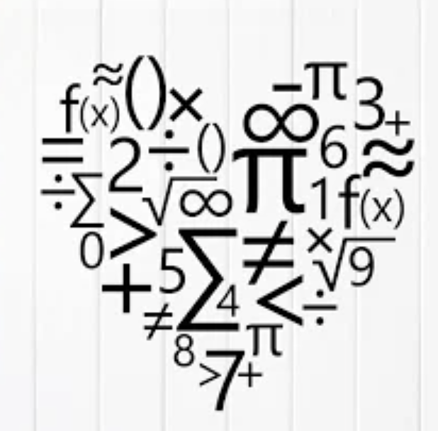

But where did it come from?
Ever wondered how math symbols came to be? Let's dive into the exciting journey of mathematical notation and see how it has made math simpler! Along the way, we'll explore how these innovations helped us represent quantities more easily (Representation) and made complex ideas simpler to understand (Simplification).
Timeline of Key Inventions
üìú 9th Century - Al-Khwarizmi
Known as the "Father of Algebra," Al-Khwarizmi introduced methods for solving equations. He didn't have the cool symbols we use today, so he wrote everything in words! This was the beginning of finding ways to **represent** mathematical ideas.
How It Helped: By starting to write down methods, he paved the way for future mathematicians to create symbols, making math easier to share and understand (Simplification).
üî¢ 1637 - Ren√© Descartes
Descartes introduced the use of superscripts for exponents. He made it possible to write powers like x² instead of writing x multiplied by x. This was a big step in *simplifying how we represent repeated multiplication.
How It Helped: Using exponents made equations shorter and easier to read, which is important when solving complex problems (Simplification** and Representation).
üåü 19th Century - Scientific Notation
Scientists started using scientific notation to handle super big and super tiny numbers, like the distance between stars or the size of atoms! This innovation greatly simplified the representation of extremely large or small quantities.
How It Helped: Scientific notation made it easier to write and calculate with huge or tiny numbers, which is essential in science and engineering (Simplification** and Representation**).
üí° 20th Century - Modern Mathematical Symbols
As math evolved, so did the symbols we use. New symbols were introduced to **simplify** complex ideas and make them easier to **represent**. This includes symbols for operations, functions, and more.
How It Helped: These symbols allow us to write equations and formulas concisely, making it easier to learn, communicate, and advance in mathematics (Simplification and Representation).
Did You Know?
- üßÆ The equals sign "=" was invented in 1557 by Robert Recorde. He chose this symbol because "no two things can be more equal than parallel lines."
- ♾️ The symbol for infinity "∞" was introduced by John Wallis in 1655. It represents an idea that goes on forever!
- üéØ Zero was first used as a number by ancient Indian mathematicians around the 5th century. It **simplified** calculations and the **representation** of numbers.
Quiz Time: Who Introduced Superscripts for Exponents?
Key Concepts
Throughout history, mathematicians have worked to make math easier and more understandable. They focused on:
- Representation: Creating symbols and notations to express mathematical ideas clearly and efficiently. This helps us communicate complex concepts in a simple way.
- Simplification: Finding ways to make mathematical expressions and calculations easier to work with. Simplification allows us to solve problems faster and with less confusion.
ATL Skills
In exploring the evolution of mathematical notation, we used:
- Communication: Presenting our research and ideas effectively, both in writing and visually.
- Creative Thinking: Connecting historical events to mathematical concepts and understanding how they impact us today.
Research Prompts
- What was the most important contribution of Al-Khwarizmi to mathematics beyond algebra?
- How did the introduction of zero revolutionize mathematical calculations?
- What are some modern developments in mathematical notation that have made solving complex problems easier?